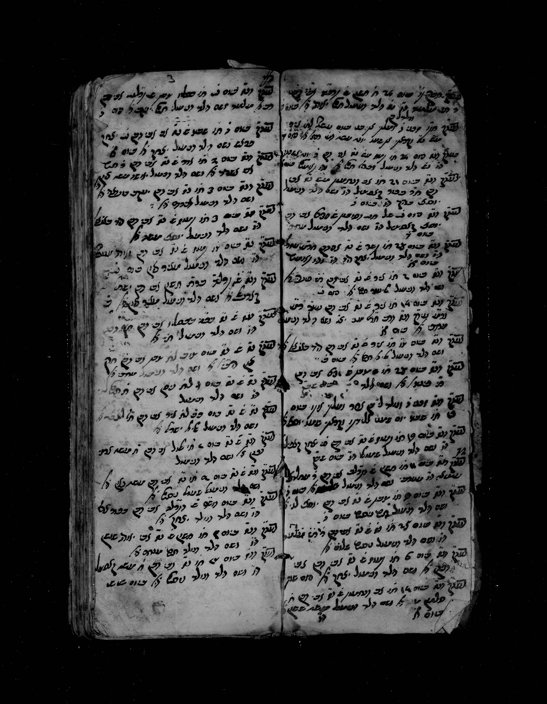

פנקס | Manuscript | NNL_ALEPH990025691010205171 | The National Library of Israel
פנקס | Jewish sermons, Hebrew 19th century , Jewish ethics , Berit milah Registers , Sheluhe de-rabanan , Earthquakes Iran | תרי"ו-תר"ן (1856-1890) | Manuscript
Any Use Permitted
